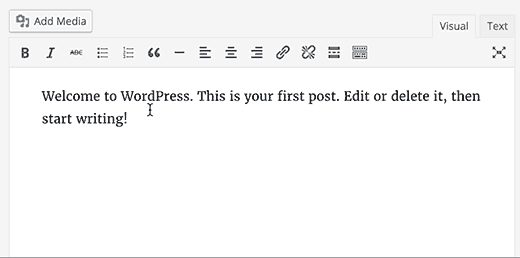
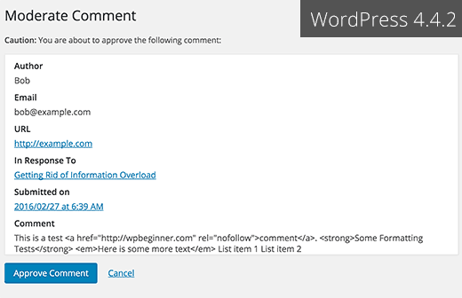
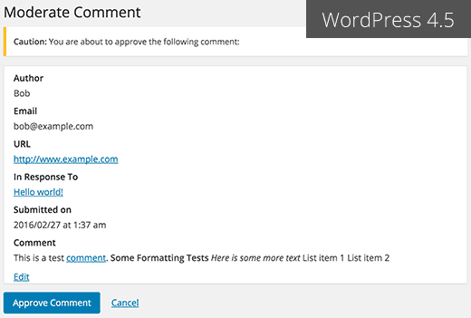
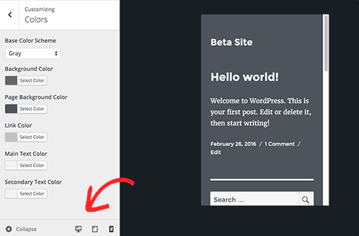
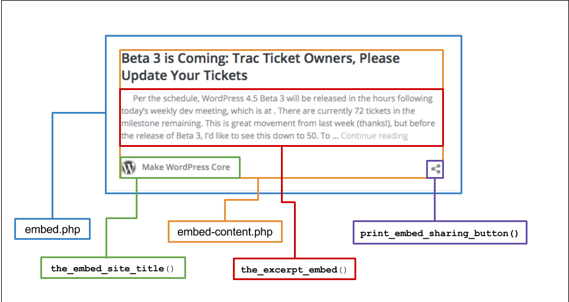

WordPress 4.5
Le novitá
Daniele Scasciafratte / @Mte90Net
Source: make.wordpress.org/core/2016/03/30/wordpress-4-5-field-guide/, wpbeginner.com/news/whats-coming-in-wordpress-4-5-features-and-screenshots/
WordPress 4.5 Clifford
469 contributor, 372 bugs fixati
Daniele Scasciafratte
- Co Founder Codeat - Full Stack Developer
- Mozillian & Mozilla Reps & Participation Leader
- Redattore per il network AndMore, ChimeraRevo, TechEconomy
- Utente Debian Linux dal 2009
- WordPress Core Contributor/Developer/Translator
- Open Source Addicted
- Industria Italiana Software Libero Vice President
Custom Logo

Custom Logo esempio
function theme_prefix_setup() {
add_theme_support( 'custom-logo' );
}
add_action( 'after_setup_theme', 'theme_prefix_setup' );
/**/
if ( function_exists( 'the_custom_logo' ) ) {
the_custom_logo();
}
Link inline editor
Moderazione commenti WP 4.4
Moderazione commenti WP 4.5
Responsive Preview nel Customizer
Embeds templating
wp_add_inline_script
add_action( 'admin_init', function() {
wp_add_inline_script( 'common', 'console.log("after");' );
wp_add_inline_script( 'jquery-core', 'jQuery.noConflict();' );
});jQuery 1.12.1, Backbone.js 1.2.3 e Underscore.js 1.8.3
WordCamp Torino
Torino 1-2 Aprile 2016